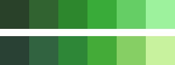
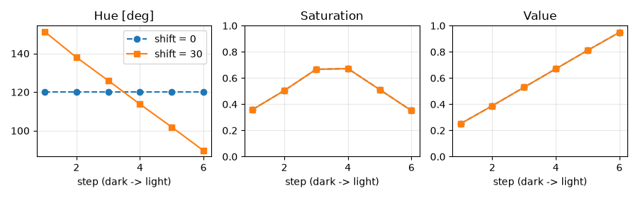
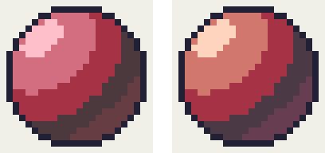

5. 色を選ぶ
ドット絵は使う色が少ないため、1 色 1 色の選び方が全体の印象を決める。この章では、色数を制限する理由と、陰影に使う色の組み合わせ（カラーランプ）の作り方を説明する。
5.1. 色数を制限する
ドット絵では、あらかじめ使う色を決めておき、その中からだけ色を選んで描く。この色の組をパレットと呼ぶ。図 2.1 のスライムは 5 色、第 7 章の主人公は 11 色で描いている。
色数を制限することには、次の利点がある。
統一感が出る：同じ色を何度も使うため、キャラクターと背景、複数のキャラクターの間で色調がそろう。
迷いが減る：色の候補が少ないので、どの色を置くかの判断が速くなる。
ピクセルの役割がはっきりする：似た色が何色もあると、拡大しないと区別できないピクセルが増え、ノイズのように見える。
目安として、16×16 ピクセルのキャラクター 1 体なら 4 色から 12 色程度、ゲーム全体でも 16 色から 32 色程度のパレットで十分に表現できる。
5.2. 色の表し方
画面に表示される色は、光の三原色である赤（R）、緑（G）、青（B）の強さの組で表す。これを RGB と呼び、各成分を 0 から 255 の整数で表すことが多い。#4fb05a のような表記は、RGB の各成分を 2 桁の 16 進数で並べたものである。
RGB はコンピューターにとっては扱いやすいが、人が色を選ぶときには直感的でない。色を選ぶときは、次の 3 つの値で色を表す HSV のほうが考えやすい。
値 |
範囲 |
意味 |
|---|---|---|
色相（H） |
0 度～360 度 |
赤、黄、緑、青などの色味。0 度が赤、120 度が緑、240 度が青で、360 度で赤に戻る。 |
彩度（S） |
0～1 |
色の鮮やかさ。0 で灰色になる。 |
明度（V） |
0～1 |
色の明るさ。0 で黒になる。 |
多くのエディタのカラーピッカーは HSV（または似た考え方の HSL や HSB）で色を指定できる。Python では標準ライブラリの colorsys モジュールで RGB と HSV を相互に変換できる。
5.3. カラーランプ
陰影を付けるには、同じ物体の明るい部分から暗い部分までを表す、明るさの異なる色の組が必要になる。この色の組を明度の順に並べたものをカラーランプ（以下、ランプ）と呼ぶ。図 2.1 のスライムは、陰、基本色、明部、ハイライトの 4 色からなる緑のランプと、輪郭の色でできている。
ランプの色数は、16×16 ピクセルのキャラクターなら 3 色から 5 色程度で足りる。色数を増やしても、それを置くための広さが無ければ区別がつかないからである。
5.4. 色相をずらす
ランプを作るとき、最も単純なのは色相を固定し、明度だけを変える方法である。しかし、この方法で作ったランプは、暗い色が濁り、明るい色が白っぽく抜けて、生気の無い印象になりやすい。
そこでドット絵では、明度に応じて色相を少しずつずらすことが多い。これをヒューシフトと呼ぶ。よく使われるのは、暗い色ほど色相を青（寒色）の側へ、明るい色ほど黄（暖色）の側へずらす方法である。太陽の光は暖かい色をしており、光の当たらない部分は青い空からの光に照らされる、という現実の見え方に近づけることになる。

図 5.1 緑のランプ（6 色）。上は色相を 120 度に固定したランプ、下は色相を最大 30 度ずらしたランプ。

図 5.2 図 5.1 の 2 つのランプの色相（Hue）、彩度（Saturation）、明度（Value）。横軸は暗い色から明るい色への順番、shift は色相をずらす量（度）である。
図 5.2 のように、2 つのランプは彩度と明度が同じで、色相だけが異なる。どちらのランプも、彩度は中央の色で最も高く、両端の色ほど低くしている。暗い色や明るい色の彩度を高くしすぎると、どぎつい印象になるからである。
ヒューシフトの効果は、同じ形を塗り比べるとよく分かる。

図 5.3 赤い球。左は色相を固定したランプ、右は色相をずらしたランプで塗った。
図 5.3 の右の球は、明部が暖かい橙色に、陰が紫寄りの色になっている。左の球より光の色が感じられ、立体感も強い。ただし、ずらしすぎると別の色の物体に見えてしまう。ずらす量は、隣り合う色の間で 10 度から 20 度程度を目安にし、見た目で調整する。
5.5. ランプを作るプログラム
make_palette.py は、色相、色数、色相をずらす量を指定してランプを作る。次のリストはランプを作る関数である。
30def make_ramp(hue: float, steps: int, shift: float = 20.0,
31 value_range: tuple[float, float] = (0.25, 0.95),
32 saturation_range: tuple[float, float] = (0.35, 0.75)) -> list[RGB]:
33 """暗い色から明るい色へ並んだカラーランプを返す。
34
35 Args:
36 hue: 中央の色の色相（度）
37 steps: 色数（2 以上）
38 shift: 両端の色で色相をずらす量（度）。0 にすると色相は一定になる。
39 value_range: 明度の最小値と最大値（0.0 から 1.0）
40 saturation_range: 彩度の最小値と最大値（0.0 から 1.0）
41 """
42 if steps < 2:
43 raise ValueError("色数は 2 以上にする")
44 colors: list[RGB] = []
45 for i in range(steps):
46 t = i / (steps - 1) # 0.0（最も暗い）から 1.0（最も明るい）
47 # 中央からの距離に比例して、暗い側は青（240 度）、明るい側は黄（60 度）へ近づける
48 if t < 0.5:
49 h = shift_hue_toward(hue, 240.0, shift * (0.5 - t) * 2)
50 else:
51 h = shift_hue_toward(hue, 60.0, shift * (t - 0.5) * 2)
52 # 彩度は中央で最大、両端で低くする
53 s_min, s_max = saturation_range
54 s = s_max - (s_max - s_min) * abs(t - 0.5) * 2
55 v_min, v_max = value_range
56 v = v_min + (v_max - v_min) * t
57 r, g, b = colorsys.hsv_to_rgb(h / 360.0, s, v)
58 colors.append((round(r * 255), round(g * 255), round(b * 255)))
59 return colors
t は暗い側の端を 0.0、明るい側の端を 1.0 とした位置である。中央より暗い色は色相を 240 度（青）へ、明るい色は 60 度（黄）へ近づける。近づける量は中央からの距離に比例させ、両端で shift 度になるようにしている。shift_hue_toward は、色相環の上で近いほうの向きに色相を回す関数である。
次のように実行すると、ランプの各色が表示され、色見本の output/ramp.png と、パレットファイルの output/ramp.gpl が保存される。
1python make_palette.py --hue 120 --steps 5 --shift 20
.gpl は GIMP のパレット形式で、GIMP や Aseprite などで読み込める。作ったランプはそのまま使うのではなく、出発点として、エディタ上で実際に塗りながら調整するとよい。
5.6. 既存のパレットを使う
パレットを一から作るのは難しい。最初は、公開されている既存のパレットを使うのがよい。Lospec のパレット一覧（参考文献を参照）には、色数や用途ごとに多くのパレットが登録されており、各種エディタ向けの形式でダウンロードできる。Pyxel エディタを使う場合は、図 3.1 の既定の 16 色から始めてもよい。
既存のパレットを選ぶときは、次の点を確認する。
描きたいものの色（肌、草、空、金属など）のランプが作れるか。
最も暗い色と最も明るい色の差が十分にあるか。
色相の異なるランプの暗い色どうし、明るい色どうしがなじむか。
5.7. 明るさの差を確認する
色を選んだら、明るさの差が十分にあるかを確認する。色相や彩度が違っても明るさが近い色どうしは、等倍で見たときに区別しにくい。画像をグレースケールに変換してみると、明るさの差だけを確認できる。多くのエディタにはグレースケールで表示する機能があり、Python では Pillow で次のように変換できる。
1from PIL import Image
2
3image = Image.open("output/slime.png")
4image.convert("LA").save("output/slime_gray.png")
"LA" は明るさと透明度の 2 つの値を持つ形式である。グレースケールにした画像で、輪郭と陰、陰と基本色などの境界が見分けにくい場合は、どちらかの色の明度を調整する。